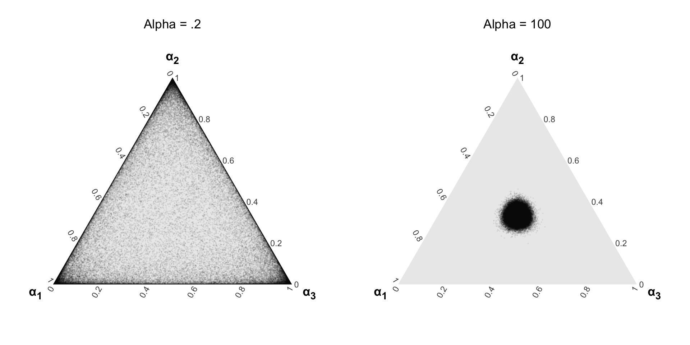

Main challenges of Topic Models
Hard to get it right
unsupervised learning requires several ad-hoc decisions and these decisions matter for quality of your results
- number of clusters
- number of topics
- pre-processing steps
Domain knowledge (and honestly a bit of randomness) guides a lot of these decisions
Hard to know if you are doing right!
in contrast to supervised approaches, we won’t know ‘how correct’ the output is in a simple statistical sense
use statistical measures of fit/unfit of different modeling decisions
- but in general, it will involve a hugely amount of qualitative assessment.
No easy measure of acccuracy, recall and precision.